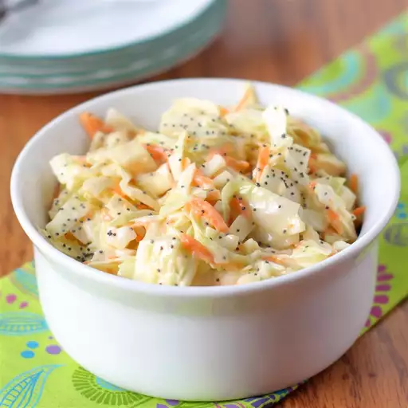

Coleslaw

Coleslaw is simple, but a great additive to many meals. It goes great paired with burgers and fries (and for a real treat put it directly on the burgers!)
Ingredients
- 1 (16 oz) bag coleslaw mix
- 2 tablespoons diced onion
- 2/3 cup creamy salad dressing (such as Miracle Whip)
- 1/2 cup white sugar
- 3 tablesppons vegetable oil
- 1 tablesppoon white vinegar
- 1/2 teaspoon poppy seeds
- 1/4 teaspoon salt
Directions
- Gather ingredients.
- Combine the coleslaw mix and onion in a large bowl.
- Whisk salad dressing, sugar, vegetable oil, vinegar, poppy seeds, and salt together in a medium bowl until blended.
- Pour dressing over coleslaw mixture and toss to coat. Chill for at least 2 hours before serving.